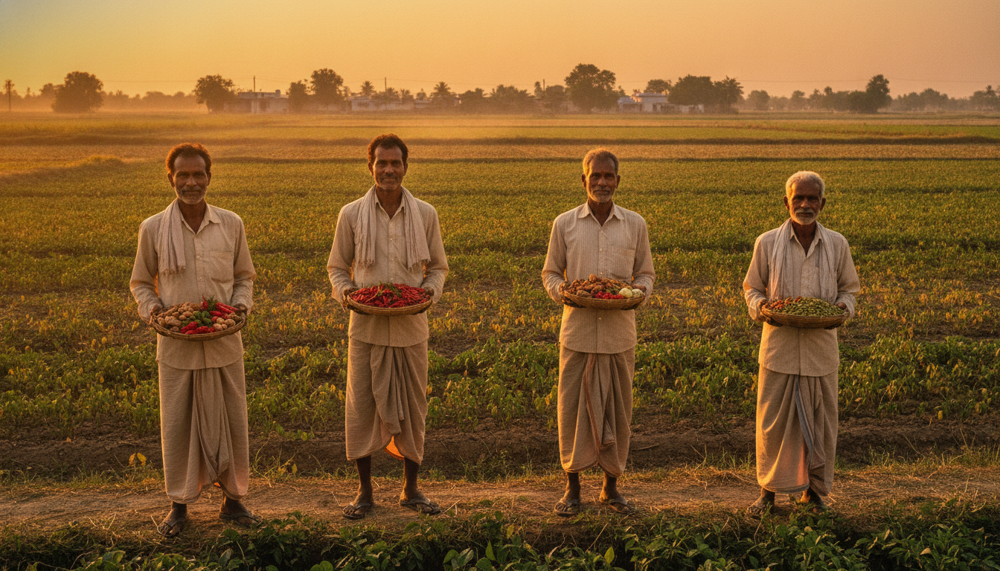
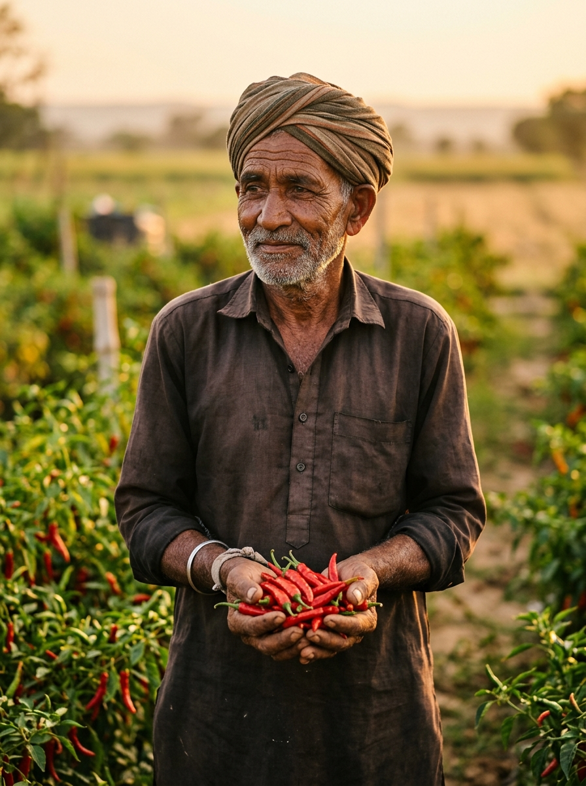

Home / Sustainability
Clean spice starts with the soil and the farmer.
Single-origin sourcing is only as good as the relationships behind it. We invest in the farm-belts we buy from — because flavour, fairness and continuity travel together.
Give back to the source.
A spice can only be as good as the season and the soil it came from — and a supply chain can only be as clean as the people in it are treated fairly. So we treat sourcing as a relationship, not a transaction.
Working close to the growing regions lets us reward quality directly, keep the chain short, and build the kind of repeat relationships that produce consistent crops year after year. Good for the farmer, good for the lot, good for you.

Commitments we're building on.
Fair, direct sourcing
Buying close to source means growers are rewarded for quality, and the value of a good crop reaches the people who raised it.
Quality-led farming
We favour growers and practices that protect soil and crop health — the foundation of high essential-oil, high-curcumin, deep-colour spice.
Less waste, less harm
Sorting and processing are run to minimise waste, and we avoid the chemical shortcuts that pollute both the product and the environment.
Continuity of supply
Durable grower relationships smooth out seasonal swings, so buyers get dependable volumes of the same quality year on year.
Responsible packaging
We choose packaging that protects the spice while keeping material use sensible and fit for the destination market.
Transparency
Traceability isn't just a safety feature — it's a record of where value goes and how each lot was made.
"Replenish, nurture, and keep the chain short. The flavour follows."
— How we think about sourcing
Source spice you can stand behind.
Talk to us about single-origin lots backed by fair sourcing and full traceability.